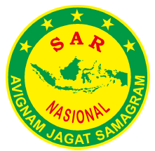
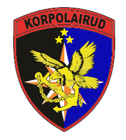
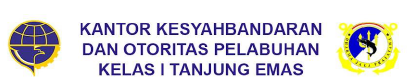
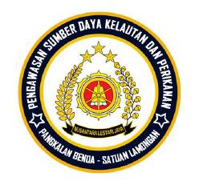
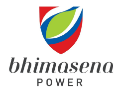
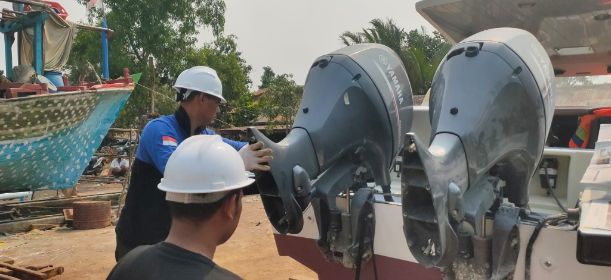
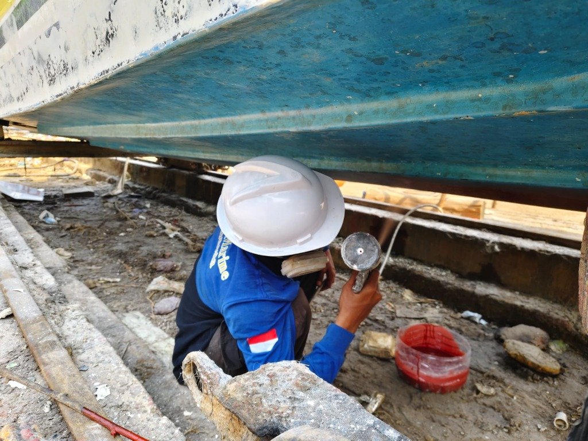
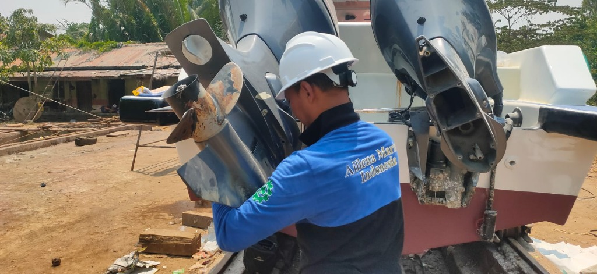

Transparansi Profil, Visi-Misi,
Struktur Tim & Legalitas Perusahaan
Mengenal secara menyeluruh dedikasi PT Aillena Marine Indonesia. Dari bengkel spesialis mesin tempel Memey Marine Semarang hingga menjadi perseroan terpercaya dengan sertifikasi teknisi resmi Yamaha dan terdaftar aktif di sistem E-Katalog LKPP / INAPROC.
Dedikasi Tinggi untuk Keandalan Armada Maritim Indonesia
Fondasi keahlian mekanikal maritim yang kuat, bertransformasi menjadi mitra strategis instansi pemerintah dan pemilik armada laut di seluruh Indonesia.
Kilas Balik & Transformasi Bisnis
"Berangkat dari komitmen kuat terhadap keselamatan dan efisiensi armada perairan di wilayah pesisir Jawa Tengah, kami hadir menjawab tantangan pemeliharaan kapal dengan ketelitian mekanik dan standar pabrikan teruji."
PT Aillena Marine Indonesia berakar dari reputasi panjang bengkel spesialis mesin kapal Memey Marine di Kota Semarang. Selama bertahun-tahun melayani para nelayan modern, operator speedboat penumpang, hingga armada patroli kedaruratan, kami menyadari bahwa keandalan mesin di tengah laut adalah taruhan nyawa dan kelancaran operasi vital.
Dengan transformasi menjadi perseroan terbatas berbadan hukum resmi, PT Aillena Marine Indonesia kini memperluas kapasitas pelayanan: mulai dari pengadaan suku cadang asli pabrikan (OEM), instalasi permesinan, docking rel mekanik khusus, rekonstruksi lambung fiberglass, hingga uji coba kelayakan laut (Sea Trial) yang terdokumentasi rapi.
Pondasi Bengkel Memey Marine Semarang
Memulai layanan servis mesin tempel perahu (Yamaha Outboard Motor) dengan fokus pada keahlian mekanik presisi dan pengadaan suku cadang terpercaya bagi komunitas maritim lokal.
Fasilitas Docking Rel & Spesialisasi Komposit
Membangun slipway rel khusus untuk kapal patroli dan speedboat, serta memperluas tim teknisi di bidang bodi fiberglass, pengecatan antifouling, dan kelistrikan kapal.
Badan Hukum PT & E-Katalog LKPP Terdaftar
Mendirikan PT Aillena Marine Indonesia secara resmi ber-SK Kemenkumham, mengantongi NIB resmi, dan terdaftar di INAPROC E-Katalog LKPP untuk kemitraan pengadaan barang/jasa instansi pemerintah.
Makna Identitas Korporat
Identitas Aillena Marine memadukan simbol keteguhan bahari, keamanan navigasi, dan presisi rekayasa mekanikal modern.
Warna Deep Navy (Biru Samudra)
Melambangkan kedalaman komitmen, ketenangan dalam menghadapi kendala teknis kelautan, integritas, dan stabilitas profesional.
Aksen Emas Maritim (Maritime Gold)
Mencerminkan standar mutu tertinggi (excellence), nilai suku cadang asli bergaransi, serta penghargaan mendalam terhadap kepuasan klien.
Siluet Haluan Kapal & Gelombang
Mewakili gerak dinamis armada yang senantiasa melaju membelah ombak dengan aman setelah mendapatkan penanganan optimal dari tim kami.
Wilayah Operasional & Jangkauan Layanan
Berpusat di Kota Semarang, Jawa Tengah (strategis dekat Pelabuhan Tanjung Emas), kami melayani kebutuhan docking dan perawatan armada di berbagai wilayah pesisir:
- Wilayah Pesisir Semarang: Pelabuhan Tanjung Emas, Muara Tambak Lorok, Kali Banger.
- Pesisir Pantura Jawa Tengah: Kendal, Demak, Jepara, Rembang, Pekalongan, hingga Batang.
- Kepulauan Karimunjawa: Dukungan servis berkala armada speedboat wisata dan logistik.
- Panggilan Seluruh Indonesia: Tim Mobile Service untuk proyek perawatan kapal instansi di dermaga klien.
Spesialis Mesin Tempel
Penanganan komprehensif mesin tempel Yamaha, Suzuki, Mercury, Evinrude mulai 15 HP hingga 300+ HP 2-Tak dan 4-Tak.
Komposit Fiber Standar Laut
Bahan resin Yukalac 157, katalis, serat mat, dan roving terbaik untuk kekuatan lambung terhadap benturan karang & gelombang.
Docking Rel Khusus
Fasilitas slipway mekanik di workshop untuk proses naik-turun kapal secara aman tanpa risiko goresan pada lambung.
Uji Coba Laut (Sea Trial)
Setiap pengerjaan mesin atau bodi wajib melalui uji dinamis kecepatan dan tekanan oli di perairan terbuka sebelum diserahkan.
Visi, Misi Strategis & Budaya Kerja Terukur
Prinsip pemandu dan standar etika operasional yang melandasi setiap keputusan teknis dan hubungan kemitraan jangka panjang kami.
5 Pilar Misi Strategis Perusahaan
Keandalan Mutu Berstandar OEM
Menerapkan Standar Operasional Prosedur (SOP) sesuai instruksi teknis pabrikan resmi (Yamaha Marine OEM) dalam setiap pembongkaran, pembersihan ultrasonik, kalibrasi komponen, dan pemasangan suku cadang asli.
Prioritas Keselamatan Maritim (Safety First)
Menempatkan keselamatan jiwa dan armada sebagai hukum tertinggi. Tidak ada kompromi terhadap pengujian kebocoran lambung, kekuatan laminasi komposit fiberglass, serta keandalan sistem kemudi dan pengapian darurat.
Respons Cepat & Siaga Siap Operasi
Menyediakan layanan tanggap darurat 24 jam dan unit teknis bergerak (Mobile Service) guna meminimalkan downtime armada operasional, khususnya bagi kapal SAR, patroli keamanan, dan kapal medis kelautan.
Integritas Pengadaan & Kepatuhan Regulasi
Menjalankan tata kelola usaha yang akuntabel, transparan, dan patuh terhadap regulasi negara melalui keikutsertaan aktif di katalog elektronik pengadaan pemerintah (E-Katalog LKPP / INAPROC) serta pemenuhan kewajiban perpajakan.
Peningkatan SDM & Ramah Lingkungan
Berinvestasi pada pelatihan berkala dan sertifikasi teknisi muda, sekaligus mempraktikkan pengelolaan limbah oli bekas, sisa resin, dan debu fiberglass sesuai kaidah pelestarian ekosistem perairan pesisir.
Garansi Pengerjaan & Pendampingan
Memberikan garansi pengerjaan dan pendampingan teknis setelah kapal selesai diservis, didukung Berita Acara Serah Terima (BAST) dan rekaman data uji coba laut resmi.
Nilai-Nilai Inti: P.A.S.T.I
Pedoman perilaku dan etos kerja sehari-hari seluruh jajaran komisaris, manajemen, hingga mekanik di lapangan.
Profesional
Bekerja tuntas dengan keahlian teruji, peralatan terstandar, dan etika bisnis maritim yang bermartabat.
Akurat
Mendiagnosa kendala mesin secara presisi, cermat dalam penggunaan torsi baut, dan teliti dalam uji kelayakan.
Sigap
Cepat tanggap merespons permintaan klien, siaga panggilan servis bergerak, dan adaptif terhadap kebutuhan lapangan.
Terpercaya
Menjunjung kejujuran penggunaan suku cadang asli, transparansi rincian biaya, dan pemenuhan garansi kerja.
Inovatif
Terus memperbarui perkakas diagnostik komputer modern dan formulasi komposit fiber protektif terkini.
Struktur Organisasi & Tim Ahli Berpengalaman
Kombinasi kepemimpinan manajerial yang tertib tata kelola dengan 13 tenaga ahli bersertifikasi di bidang mekanikal, laminasi lambung, dan kelistrikan maritim.
Bagan Struktur Organisasi PT Aillena Marine Indonesia
Hierarki Tata Kelola, Pengawasan, dan Garis Komando Operasional
Divisi Mesin Tempel
- Haerudin (Senior 4-Tak OBM)
- Febi (Overhaul & Tune Up)
- Prasetyo (Gearcase & Baling-Baling)
Divisi Bodi & Gelcoat
- Banani (Koordinator Divisi)
- Dhony (Spesialis Komposit)
- Lisin (Struktur Lambung)
Pengecatan & Antifouling
- Khansa (Finishing Antifouling)
- Samsul (Sandblasting & Coating)
Kelistrikan & Panel
- Izar (Wiring & Navigasi)
- Tim Siaga Mobile Service
Bertanggung jawab memimpin pengawasan umum jalannya perseroan, mengawal kepatuhan terhadap perundang-undangan korporat maritim, serta memastikan akuntabilitas tata kelola keuangan dan hubungan antar lembaga.
Memimpin arah kebijakan strategis operasional workshop Memey Marine, ekspansi layanan kemitraan instansi pemerintah dan swasta, manajemen risiko keselamatan kelautan, serta pemenuhan kontrak pengerjaan armada.
Mengelola dokumentasi legalitas, penerbitan Surat Perintah Kerja (SPK), transaksi penawaran tender pemerintah melalui platform E-Katalog LKPP / INAPROC, penyiapan faktur pajak, dan pelaporan BAST resmi.
Memimpin seluruh pengerjaan teknis mesin tempel di workshop. Memiliki sertifikasi resmi Yamaha Outboard Motor Technical Training dan pengalaman panjang menangani mesin kapal instansi SAR dan patroli perairan.
Spesialis mesin tempel 4-Langkah (4-Tak) modern berteknologi Electronic Fuel Injection (EFI). Bersertifikasi Service Training Yamaha OBM 4-Tak dari distributor resmi PT Dunia Marine Internusa.
Fokus pada pembongkaran blok silinder, pembersihan ruang bakar, penggantian ring piston dan gasket, perbaikan karburator, serta penyetelan katup mesin tempel berbagai merk ternama.
Ahli dalam perbaikan dan rekondisi lower unit gearcase, penggantian seal as baling-baling, bearing transmisi maju-mundur, pompa air pendingin (impeller), dan balancing propeller.
Mengkoordinasikan inspeksi kebocoran lambung, perbaikan benturan karang, dan perataan permukaan bodi kapal menggunakan dempul dan gelcoat berstandar ketahanan air laut.
Pakar formulasi resin Yukalac 157, katalis, talk, dan aplikasi lapisan serat mat serta woven roving berlapis untuk memperkuat struktur transom dudukan mesin tempel berkekuatan tinggi.
Menangani rekonstruksi rangka gading kapal, perkuatan lantai geladak (deck), pembuatan kompartemen kedap air, serta modifikasi dudukan konsol kemudi speedboat.
Berpengalaman dalam aplikasi cat dasar pelindung osmosis (epoxy primer) dan lapisan cat antifouling bawah air guna mencegah penempelan teritip dan tiram laut pada lambung kapal.
Bertanggung jawab membersihkan kerak tiram, karat pada bracket logam penopang mesin, dan persiapan permukaan sebelum proses laminasi ulang fiber dan pengecatan poliuretan.
Menangani diagnosis kelistrikan dinamo starter, alternator pengisian aki, pemasangan battery selector switch, instalasi lampu navigasi laut, panel instrumen RPM/Trim, dan pompa bilga otomatis.
Legalitas Resmi Badan Hukum & Kepatuhan Pengadaan RI
Seluruh operasional bisnis PT Aillena Marine Indonesia dijalankan dengan landasan hukum yang sah, akuntabel, dan siap bermitra untuk proyek instansi kedinasan pemerintah maupun swasta.
Nomor Induk Berusaha (NIB)
0711250099035Diterbitkan secara sah melalui sistem Online Single Submission (OSS) Berbasis Risiko Republik Indonesia, mencakup izin usaha reparasi kapal, perahu, perbengkelan mesin tempel, dan perdagangan besar suku cadang maritim.
SK Pengesahan Kemenkumham RI
AHU PT TerdaftarBerbadan hukum resmi Perseroan Terbatas (PT) dengan Akta Pendirian Notaris dan Surat Keputusan Pengesahan Badan Hukum dari Kementerian Hukum dan Hak Asasi Manusia Republik Indonesia.
NPWP Badan Usaha (DJP)
Wajib Pajak AktifTerdaftar resmi pada Direktorat Jenderal Pajak (DJP) sebagai Wajib Pajak Badan Usaha yang patuh, berkemampuan menerbitkan Faktur Pajak Elektronik (e-Faktur) resmi untuk kebutuhan administrasi kontrak SPK.
Penyedia E-Katalog LKPP
AILLENA MARINE INDONESIATercatat sebagai entitas penyedia resmi berstatus Online - Kota Semarang pada portal Lembaga Kebijakan Pengadaan Barang/Jasa Pemerintah (LKPP). Memungkinkan transaksi E-Purchasing langsung bagi Kementerian, Dinas Kelautan, Polairud, & Basarnas.
Buka Etalase INAPROC KamiKeselamatan Kerja (K3) Maritim
SOP K3 WorkshopPenerapan perlengkapan keselamatan kerja lengkap: respirator masker uap resin, pelindung mata dan telinga, alat pemadam api ringan (APAR) marine-grade, serta prosedur evakuasi darurat perbengkelan.
Pengelolaan Limbah Bengkel
Penampungan B3 AmanPenampungan oli bekas mesin tempel, pelarut pembersih, dan sisa bahan komposit pada drum khusus berizin, guna mencegah pencemaran air tanah maupun perairan muara pesisir pantai.
Klien & Instansi yang Mempercayai Layanan Kami
Bukti nyata dedikasi dan mutu: dipercaya oleh kesatuan operasional maritim negara, regu penyelamat, otoritas pelabuhan, hingga industri energi strategis.

Kantor SAR Semarang, Pos SAR Jepara, Rembang, dan Pemalang.

Ditpolairud Polda Jateng, Polda DIY, Satpolairud Kendal, Pekalongan, dan Batang.

Kantor Kesyahbandaran dan Otoritas Pelabuhan Tg. Emas Semarang & Wilker Jawa Tengah.

Pengawasan Sumber Daya Kelautan dan Perikanan Satuan Pekalongan & Lamongan.

Operator Pembangkit Listrik Tenaga Uap (PLTU Batang 2x1.000 MW).
Sertifikasi Resmi Mekanik & Protokol Kendali Mutu
Keahlian teknis yang diakui secara resmi melalui pelatihan formal dari pemegang merk resmi Yamaha Outboard Motor dan lembaga pemerintah terkait.
Yamaha Outboard Motor Technical Training
Program sertifikasi intensif pelatihan teknis mesin tempel Yamaha Outboard Motor, mencakup pembongkaran, diagnosis kerusakan mekanis pada armada operasi penyelamatan dan pertolongan (SAR), sistem pendinginan sirkulasi air laut, serta kalibrasi sistem karburator & transmisi.
Pemegang Sertifikat: Maheri
Kepala Mekanik / Senior Marine SpecialistService Training Yamaha OBM 4-Tak
Pelatihan teknis spesialisasi mesin tempel 4-Langkah (4-Tak) Yamaha generasi modern, pemahaman sistem injeksi bahan bakar elektronik (EFI), pemanfaatan komputer diagnostik Yamaha Diagnostic System (YDIS), serta manajemen kelistrikan multi-silinder.
Pemegang Sertifikat: Haerudin
Teknisi Senior Mesin 4-Tak OBM4 Tahap Standar Pengujian Sea Trial Sebelum Serah Terima
Setiap kapal atau mesin yang selesai diperbaiki di workshop wajib menjalani prosedur verifikasi operasional di air laut guna menjamin keselamatan navigasi.
Static Test (Kolam Uji)
Penyalaan mesin di test tank pool untuk memantau kelancaran semprotan air pendingin (cooling tell-tale) dan stasioner putaran RPM mesin.
Hull Watertight Test
Pemeriksaan menyeluruh kekedapan air pada bagian tambalan fiber, lambung bawah air, transom, dan baut pengikat mesin saat kapal terapung.
Dynamic Sea Trial Run
Pengujian mesin pada kecepatan jelajah hingga putaran maksimal (WOT) di perairan laut terbuka guna mengukur suhu mesin dan respon kemudi.
Dokumentasi BAST
Pencatatan data performa, tanda tangan Berita Acara Uji Coba, dan penyerahan kapal secara resmi kepada perwakilan pemilik/instansi.
Fasilitas Workshop Memey Marine & Kapasitas Dukung
Dukungan fasilitas fisik bengkel representatif, peralatan angkat beban, serta perangkat uji modern di Semarang.

Workshop AreaWorkshop Memey Marine
Area kerja terstandar di Jl. Sendowo No. 88 Purwodinatan Semarang, dilengkapi ruang perakitan mesin steril dari debu, rak perkakas torsi presisi, dan bak pencucian ultrasonik suku cadang.
- Ruang bongkar pasang mesin steril
- Crane katrol pengangkat mesin s/d 2 Ton
- Gudang penyimpanan suku cadang asli OEM

Docking SlipwaySistem Docking Rel Khusus
Jalur rel peluncuran dan penarikan kapal (*slipway rail carriage*) khusus yang mampu menaikkan speedboat dan perahu patroli hingga kapasitas 15 GT untuk perawatan bawah lambung.
- Kapasitas angkat hingga 15 Gross Tonnage (GT)
- Winch elektrik berpengaman ganda
- Area sandblasting & pengecatan kering

Overhaul & DiagnostikDiagnostik Komputer & Overhaul
Perangkat keras & lunak Yamaha Diagnostic System (YDIS) untuk pembacaan log sensor ECU, serta overhaul mekanikal transmisi, propeller, dan kalibrasi presisi.
- Scanner komputer YDIS mesin Yamaha EFI
- Kalibrasi lower unit gearbox & propeller
- Mobil operasional service darurat siaga 24 Jam